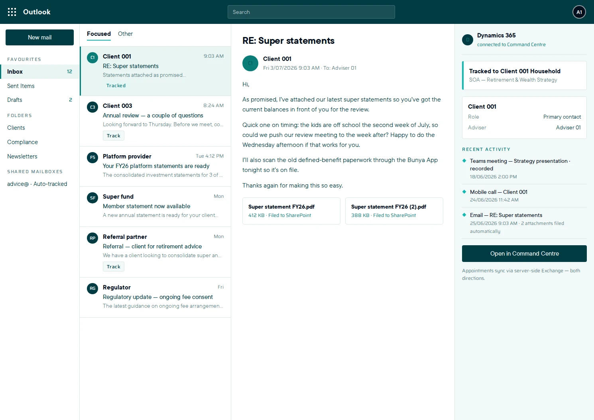
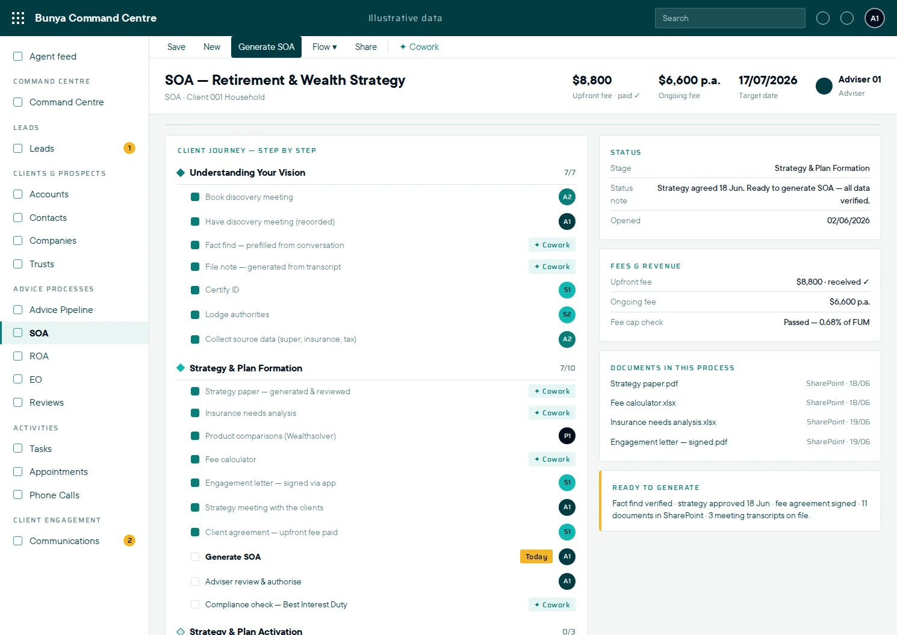
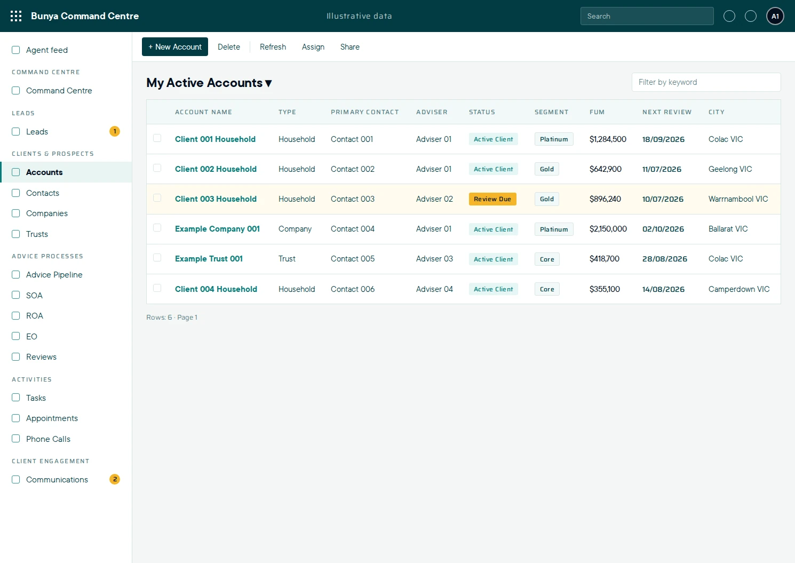
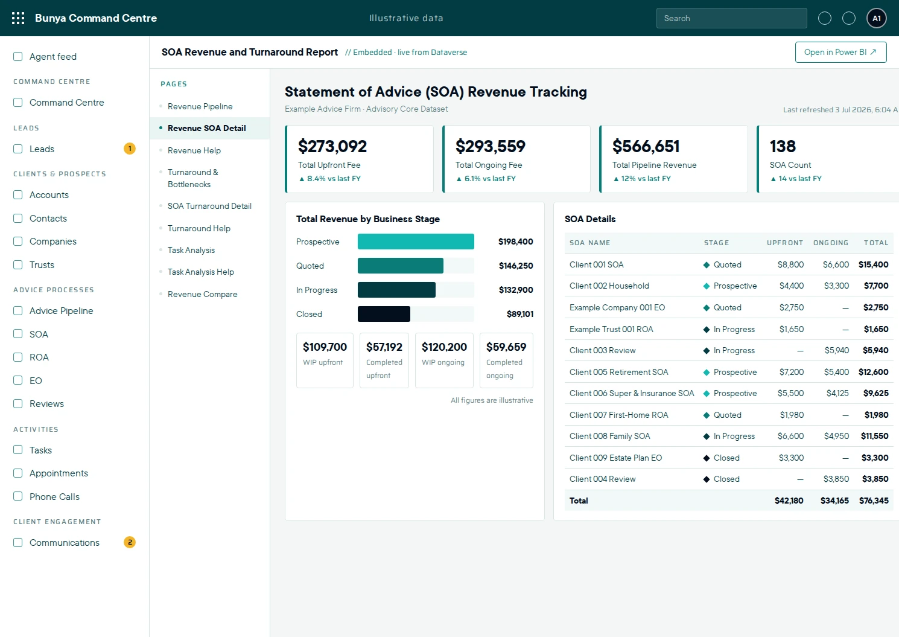

Keep the context together.
Bring client history, documents and related work within reach, so colleagues can pick up the relationship without rebuilding the story.
BUILT FOR AUSTRALIAN FINANCIAL ADVICE FIRMS
Bring client context, advice workflows and review cycles together—with AI to help your team prepare and keep work moving.
Built around your firm. In your Microsoft environment.
Example Family
Account · Household · Melbourne VIC
Timeline
KNOW THE CLIENT. KNOW THE WORK.
Bring client history, documents and related work within reach, so colleagues can pick up the relationship without rebuilding the story.
See stages, responsibilities and outstanding items as advice work moves between advisers, support and paraplanners.
Bring pipeline, fee information and progress into the management conversation with reporting shaped around your firm.
EXPLORE THE PRODUCT
Explore how your team can move from the working day into advice preparation, client reviews and practice reporting.
Bring active work, upcoming meetings and client context into view. Open the record behind the next action.
Test Drive it Yourself ↗Recreated interface · illustrative data



PREPARE WITH CONTEXT. FOLLOW THROUGH WITH CLARITY.
Keep recurring client work organised, and give your people a better starting point for the next task.
CLIENT REVIEWS
Coordinate review dates, preparation and responsibilities. Keep outstanding follow-up visible so your team knows what still needs attention.
AI-ASSISTED PREPARATION
Use connected information and agreed AI skills to prepare drafts and proposed actions. Your people check the output and decide what happens next.
YOUR WORKFLOWS. YOUR MICROSOFT ENVIRONMENT.
Define the fact-find, SoA and RoA preparation workflows, required inputs, review stages and handovers your team needs. Keep relevant activities and supporting records connected to the matter.
Your scope sets the supported outputs, permissions and connections. Your agreement defines component rights and handover, alongside Microsoft licensing, usage and ongoing services.
Understand the model ↗CONFIDENCE IN THE MOVE
Define the workflows, connections, responsibilities and costs before the build.
Prove representative scenarios and the migration approach with your people.
Use client video tutorials, practical tasks and agreed support to make the move.

YOUR NEXT CHAPTER STARTS WITH ONE WORKFLOW.
Explore Command Centre with example data, or talk through your priorities.